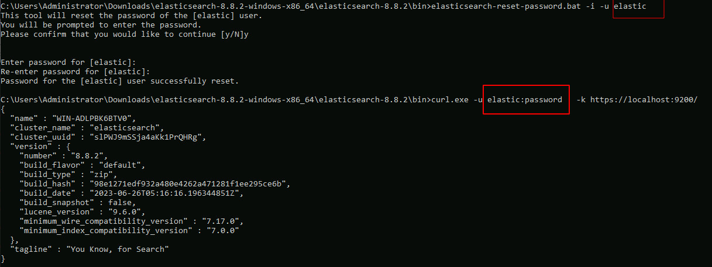

<!-- .slide: class="title" --> # Interfacing with Elastic/Kibana --- <!-- .slide: class="content" --> ## What is Elastic/Opensearch * Opensearch is a high performance text indexing system * Elastic used to be open source, but is now commercial - Opensearch is the open source equivalent. * Kibana is a GUI for Elastic. * We will not go into any details regarding Opensearch or Kibana * Only discuss how to interface Velociraptor with this. --- <!-- .slide: class="content small-font" --> ## Connection to Elastic or Opensearch * Velociraptor offers Elastic/Opensearch or Splunk bulk uploaders. * Simple Bulk upload API clients - just push data upstream. * We currently do not offer a way to query the data in VQL - only upload it. * The `Elastic.Flows.Upload` artifact works by installing a server event monitoring query: * Watch for `System.Flow.Completion` events * Get all the data for each artifact query and upload to elastic index * Each artifact source receives its own index. * Indexes are automatically created --- <!-- .slide: class="content small-font" --> ## Installing ELK * A lot of tutorials online about installing ELK * For the sake of this exercise, I will have elastic and kibana listening on localhost only. Real installs are more complex. * Install Java for Windows: https://www.oracle.com/au/java/technologies/downloads * Download Elastic ZIP for windows: https://www.elastic.co/downloads/elasticsearch * Unzip Elastic and start it using `bin\elasticsearch.bat` * Reset password with * `elasticsearch-reset-password.bat -i -u elastic` * Optionally install `Kibana` if you want but we wont be using it. --- <!-- .slide: class="content" --> ## Interacting with Opensearch * Elastic/Opensearch has a REST API which can be accessed with `curl.exe` * To test if the cluster is up, simply issue a GET request. * `curl.exe -X GET -u elastic:password -k https://localhost:9200/` * In a real environment connections will be secured with HTTPS and include credentials. --- <!-- .slide: class="content small-font" --> ## Interacting with Opensearch * Reference for REST API is https://www.elastic.co/guide/en/elasticsearch/reference/current/cat.html  --- <!-- .slide: class="full_screen_diagram" --> ### Installing the uploader  --- <!-- .slide: class="full_screen_diagram" --> ### Verifying the Uploader works  --- <!-- .slide: class="content" --> ## Check for new indexes * The `Elastic.Flows.Upload` artifact pushes data to indices named after the artifact name. * By default Elastic automatically creates the index schema. * This is not ideal because the index will be created based on the first row. * If the first row is different from the rest the index will be created with the wrong schema! * This is why it is important to keep your artifacts consistent! always return the same rows even if null. --- <!-- .slide: class="content small-font" --> ## Verify that indexes are populated ``` curl.exe -u elastic:password -k https://localhost:9200/_cat/indices curl.exe -u elastic:password -k https://localhost:9200/artifact_generic_client_info_users/_search ```  --- <!-- .slide: class="content" --> ## You can clear indices when you want You can use the Elastic documentation to manipulate the Elastic server https://www.elastic.co/guide/en/elasticsearch/reference/current/indices-delete-index.html ``` curl.exe -u elastic:password -k -X DELETE "https://localhost:9200/artifact_generic_client_info_users ``` --- <!-- .slide: class="content" --> ## Exercise: Create and maintain Elastic index * The `Elastic.Flows.Upload` artifact is just an example of an elastic artifact. * We can maintain any kind of elastic index * For this exercise, create and maintain an index of all known clients * Update this index every hour. --- <!-- .slide: class="content small-font" --> ## Exercise: Create and maintain Elastic index <div class="solution solution-closed"> ``` SELECT * FROM elastic_upload( addresses="https://127.0.0.1:9200/", skip_verify=TRUE, index="clients", username="elastic", password="password", query={ SELECT * FROM foreach(row={ SELECT * FROM clock(period=3600, start=0) }, query={ SELECT client_id, os_info.hostname AS Hostname FROM clients() }) }) ``` </div>